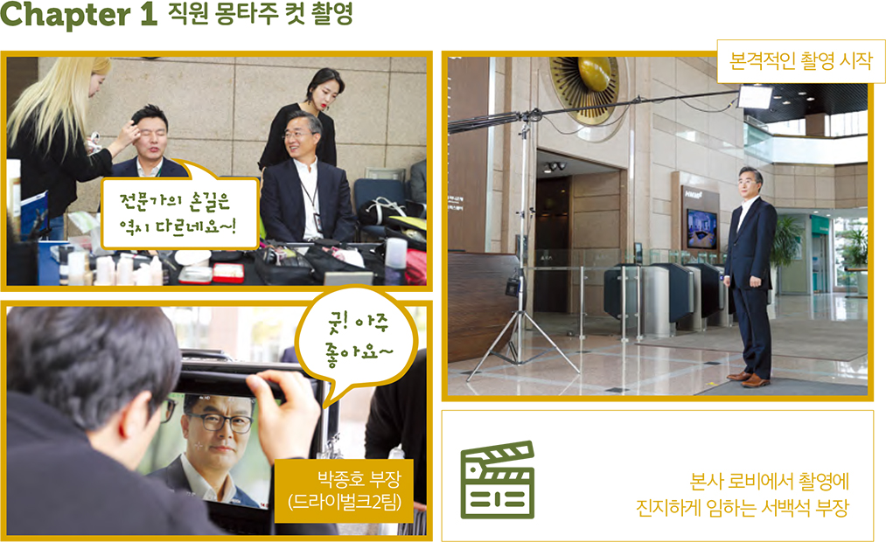
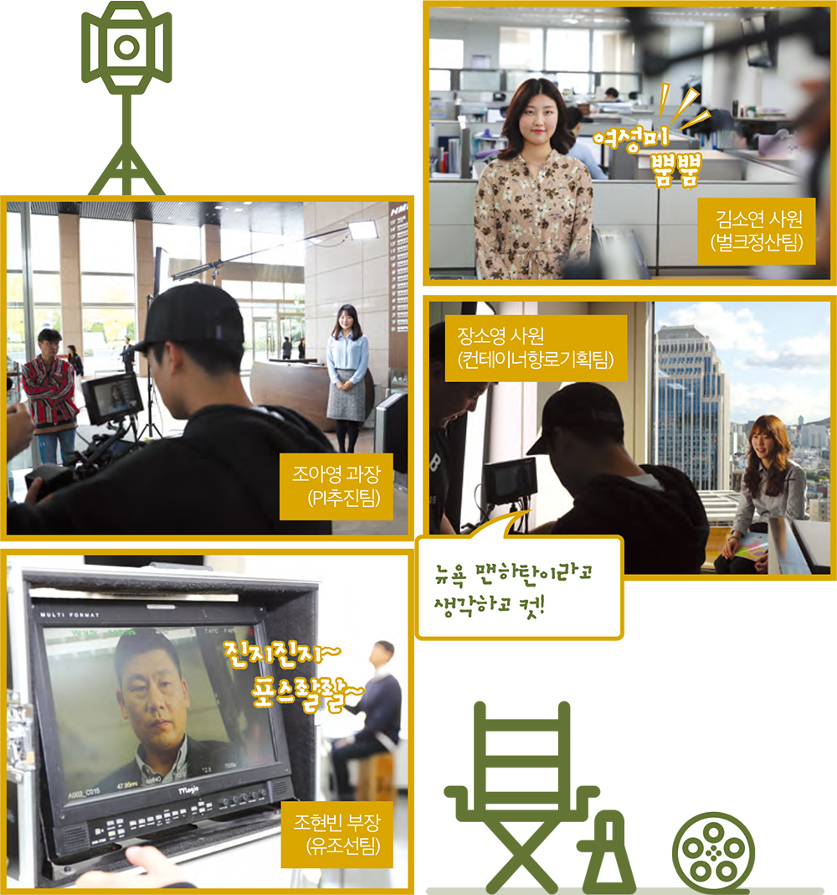
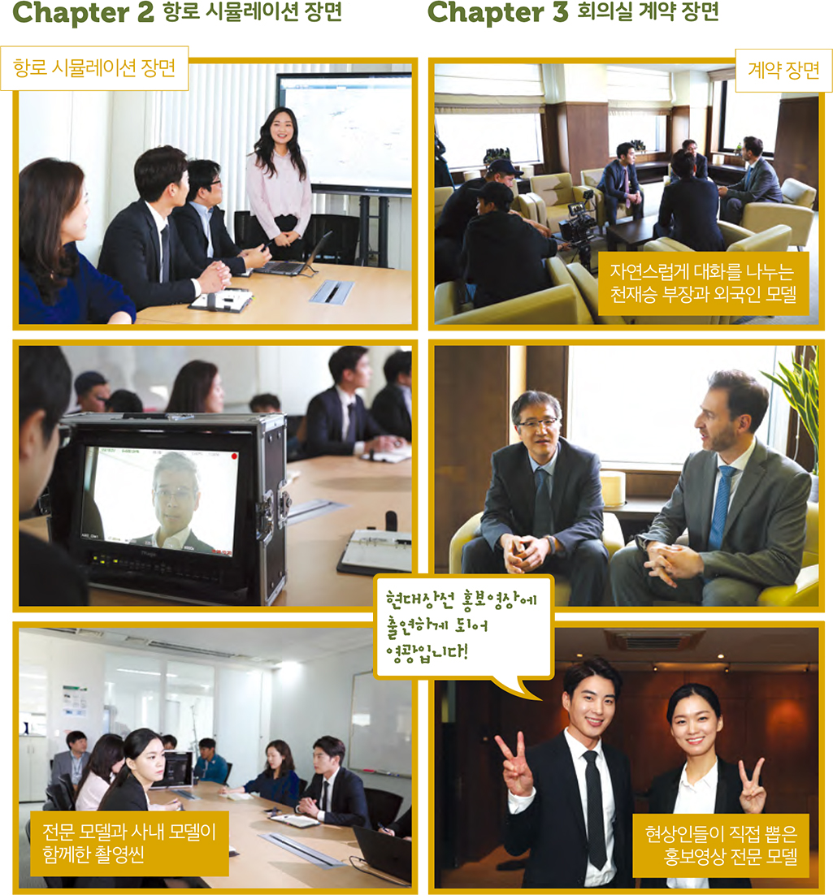

와 제 롤모델이 잡스에요!!! 아이폰 첫 출시되고 나서부터 계속 아이폰 쓰고 있는데 잡스가 너무 그리워요ㅠㅠ 지금은 돈만 벌려고 하는 것 같아서 디자인 발전도 없고ㅠㅠ와 제 롤모델이 잡스에요!!! 아이폰 첫 출시되고 나서부터 계속 아이폰 쓰고 있는데 잡스가 너무 그리워요ㅠㅠ 지금은 돈만 벌려고 하는 것 같아서 디자인 발전도 없고ㅠㅠ와 제 롤모델이 잡스에요!!! 아이폰 첫 출시되고 나서부터 계속 아이폰 쓰고 있는데 잡스가 너무 그리워요ㅠㅠ 지금은 돈만 벌려고 하는 것 같아서 디자인 발전도 없고ㅠㅠ와 제 롤모델이 잡스에요!!! 아이폰 첫 출시되고 나서부터 계속 아이폰 쓰고 있는데 잡스가 너무 그리워요ㅠㅠ 지금은 돈만 벌려고 하는 것 같아서 디자인 발전도 없고ㅠㅠ와 제 롤모델이 잡스에요!!! 아이폰 첫 출시되고 나서부터 계속 아이폰 쓰고 있는데 잡스가 너무 그리워요ㅠㅠ 지금은 돈만 벌려고 하는 것 같아서 디자인 발전도 없고ㅠㅠ
HMM 인사이드
현상인과 함께해서 더 뜻깊었던
현대상선
홍보영상 촬영기
홍보영상 촬영기
지난 10월 18일 오후 현대상선 사옥 로비가 떠들썩해졌다.
지나가던 사람들의 발걸음을 멈추게 한 소리의 정체는 로비에서 시작된 현대상선 홍보영상 촬영이다.
현상인들이 직접 참여해서 더 의미 있었던 홍보영상 촬영 현장을 소개한다.
글
최가영(코비즈)
사진
유진 사원(대외협력실)
“출장을 갔다 왔더니 제가 모델로 뽑혀 있더라고요.” 본격적인 촬영이 시작되기 전, 홍보영상에 참여하게 된 두 사내 모델이 너털웃음을 터뜨리며 대화를 나눈다. 드라이벌크2팀 박종호 부장과 컨테이너선대기획팀 서백석 부장이 그 주인공이다. 현대상선이 지난 10월 18일 하루 동안 사내에서 진행했던 홍보영상 촬영에는 여러 팀의 현상인들이 모델로 참여했는데, 팀원들의 추천으로 직접 신청을 했던 이가 있는 반면, 타의 100%로 참여하게 됐다며 웃음 짓는 이도 있었다.
오후 1시, 사내 모델로 발탁된 현상인들이 1층 다목적실로 모여들었다. 안에는 이미 전문 메이크업 아티스트들이 현상인들의 변신을 돕기 위해 대기 중이었다. 현상인들 모두 신기해하면서도 어색함을 숨기지 못했지만, 전문가의 손길에 금세 전문 모델 같은 모습으로 변신했다.

본격적인 촬영 시작. 쑥스러워 했던 것이 무색하게 촬영팀이 지시하는 대로 척척 움직이는 현상인들. 잠시 쉬는 시간이 주어질 때마다 너무 못하는 것 같다며 손사래를 쳤지만, 카메라가 돌아가는 동안은 자못 진지하게 촬영에 임했다. 모니터 화면 너머로 사내 모델들의 모습을 체크하던 촬영팀 모두 다들 촬영을 많이 해보신 분 같다며 감탄할 정도였다.

이어진 촬영은 항로 시뮬레이션 장면. 이 촬영부터는 전문 모델도 함께했는데, 전문 모델 역시 현상인들의 참여로 선정되었다. 같은 달 12일부터 나흘간 투표를 진행한 가운데 총 485명의 현상인이 참여해 남자·여자·외국인 모델 3명을 선발한 것이다. 현상인들이 직접 모델로 참여하고, 전문 모델 선정까지 현상인들의 손에서 탄생한 이번 홍보영상은 그야말로 현상인들이 만든 영상이라고 해도 과언이 아니었다. 그래서일까. 다들 동료들의 앞에서 연기하는 것을 어색해 하면서도 카메라가 돌아갈 때면 최선을 다해 집중했다. 그런 열정을 본 촬영팀과 모델들 역시 현상인들의 긴장감을 풀어주기 위해 ‘우리는 모두 현대상선 가족입니다!’를 외치며 화기애애한 분위기를 만들어냈다.
계약 장면을 촬영하던 15층 회의실. 멋진 마천루 풍경이 내려다보이는 창가 앞에 외국인 한 명이 서 있었다. 계약 장면 촬영을 위해 온 외국인 모델이다. 그 옆에 자연스럽게 다가가는 사람은 촬영을위해 회의실에 올라온 컨테이너전략고객관리팀 천재승 부장과 특수화물영업관리팀 이정엽 사원. 실제 계약이 어떻게 이루어지는지 알려주면서 자연스럽게 대화를 나누며 편해졌기 때문일까. 본격적인 촬영이 시작되자 정말 함께 일했던 파트너와 계약을 체결하는 것처럼 자연스러운 장면이 연출되었다.

9월 말부터 시작된 홍보영상 촬영은 약 2개월 동안 국내 부산지사, 해영선박 트레이닝센터, 현대해양서비스, 부산신항 등을 거쳐 싱가포르 법인, 미국 롱비치·시애틀 터미널, 네덜란드 로테르담 터미널까지 해외 로케이션 촬영이 진행됐다.
편집이 끝나면 이날의 기록을 보게 되는 것은 짧은 홍보영상이 전부일지도 모른다. 하지만 그 짧은 영상을 위해서 현상인들은 최선을 다해 촬영에 임해주었다. 메이크업, 카메라 앞에서 움직이는 것 등 모든 것이 낯설 텐데도 불평 한마디 없었다.
촬영 후 만난 현상인들 모두 회사의 특별한 이벤트에 참여할 수 있어서 영광이었다며 웃어주었다. 그런 현상인들이 함께했기에 이번 홍보 영상은 훨씬 더 멋진 영상으로 완성되지 않을까 벌써부터 기대가 된다.
-
최고예요
322
-
좋아요
322
-
슬퍼요
322
-
그저 그래요
322
-
화나요
322